loc_id hemoglobin anemia age urban LATNUM LONGNUM mean_hemoglobin
1 1 12.5 not anemic 28 rural 0.220128 21.79508 11.81053
2 1 12.6 not anemic 42 rural 0.220128 21.79508 11.81053
3 1 13.3 not anemic 15 rural 0.220128 21.79508 11.81053
4 1 12.9 not anemic 28 rural 0.220128 21.79508 11.81053
5 1 10.4 mild 32 rural 0.220128 21.79508 11.81053
6 1 12.2 not anemic 42 rural 0.220128 21.79508 11.81053
community_size mean_age
1 19 19
2 19 19
3 19 19
4 19 19
5 19 19
6 19 19Geospatial Modeling
Prof. Sam Berchuck
Mar 17, 2026
Review of last lecture
During our last lecture, we learned about Gaussian processes.
We learned how to apply Gaussian processes to longitudinal (or time-series) data.
The longitudinal setting is one-dimensional (i.e., time). Today we will learn about applying Gaussian processes in two-dimensions (i.e. space).
Three Types of Spatial Data:
Geostatistical Point Referenced Data
Lattice Data (Areal Data)
Spatial Point Process Data
- All of these data settings can be extended to space-time
Geostatistical Point Referenced Data
Point observations of a continuously varying quantity over a region
- Daily Concentrations of Ozone Over NC
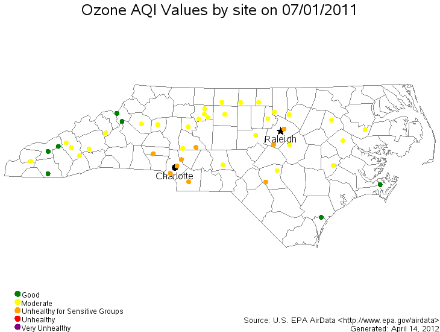
Geostatistical Point Referenced Data
- Daily Concentrations of PM2.5 Over the US
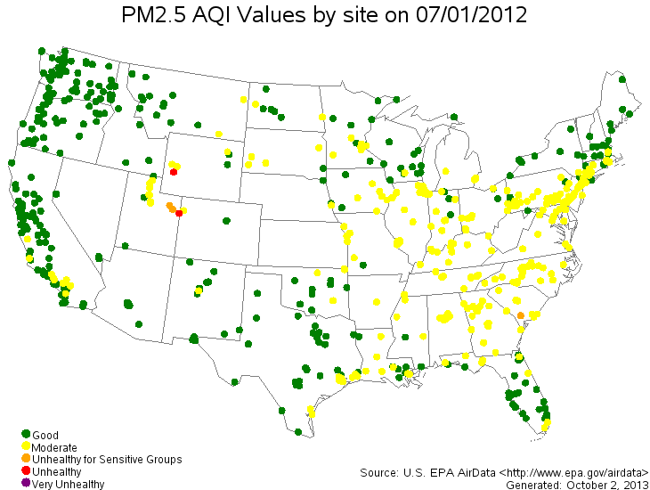
Lattice Data (Areal Data)
Data observed at the level of an areal unit
- County Level Sudden Infant Death Syndrome Counts

Lattice Data (Areal Data)
- Birmingham Tract Level Poverty Levels

Spatial Point Process Data
Analyzing the clustering of random locations
Locations of a certain tree type in a forest
Epicenter of earthquakes
Sometimes difficult to differentiate from point referenced geostatistical data (visually)
Spatial Point Process Data
- Minneapolis Convenience Store Locations

Spatial Data Analysis: When?
Anytime you have spatial information collected with your data.
Increasing availability of some level of spatial information:
Latitude/longitude.
County, state, etc.
Imaging data.
Spatial Data Analysis: Why?
Correct statistical inference (conditional independence may not be a valid assumption!).
- Specific goals will depend on the type of spatial data you have and the objective of your analysis.
Producing maps with valid inference.
Spatial Data Analysis: How?
Bayesian Hierarchical Modeling:
- Flexible framework to handle multiple levels of uncertainty.
- Markov chain Monte Carlo (MCMC) offers computationally convenient solution to make inference.
Frequentist methods also available through the EM algorithm.
- Original frequentist methods ignore some of the uncertainty in estimating these spatial models.
Goals of a Point-referenced Analysis
Estimation and explanation:
Typical regression parameter estimation.
- How does temperature change across the domain (large-scale)?
Prediction at unobserved locations:
Original development of spatial methods.
Kriging named after D.G. Krige (mining applications).
Design issues:
- Where to put a new air pollution monitor to optimize future prediction criteria?
Goals of a Point-referenced Analysis
- Estimation and Explanation
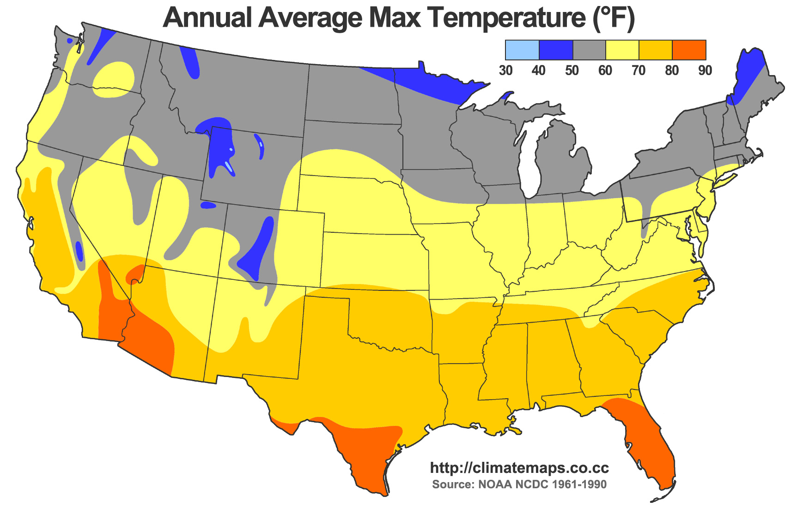
Goals of a Point-referenced Analysis
- Spatial Prediction

Goals of a Point-referenced Analysis
- Spatial Prediction

Goals of a Point-referenced Analysis
- Spatial Prediction

Point-referenced Modeling
Observations closer in space tend to be more similar.
Common regression models assume independence among observations.
- Not a valid assumption here, especially at short distances.
Multivariate normal distribution with valid spatial covariance function used in Bayesian modeling.
Spatial covariance describes how observations are correlated based on their proximity to each other.
- Advanced models built on similar ideas.
Latent processes often used.
Point-referenced Modeling
\[ Y_{ij} = \alpha + \mathbf{x}_{ij} \boldsymbol{\beta} + \theta_i + \epsilon_{ij}, \quad \epsilon_{ij} \stackrel{iid}{\sim} N(0,\sigma^2).\]
Data Objects:
\(i \in \{1,\dots,n\}\) indexes unique locations.
\(j \in \{1,\dots,n_i\}\) indexes individuals at each location.
\(Y_{ij}\) denotes the observation of individual \(j\) at location \(i\).
\(\mathbf{x}_{ij} \in \mathbb{R}^{1 \times p}\), where \(p\) is the number of predictors (excluding intercept).
Point-referenced Modeling
\[Y_{ij} = \alpha + \mathbf{x}_{ij} \boldsymbol{\beta} + \theta_i + \epsilon_{ij}, \quad \epsilon_{ij} \stackrel{iid}{\sim} N(0,\sigma^2).\]
Population Parameters:
\(\alpha \in \mathbb{R}\) is the intercept.
\(\boldsymbol{\beta} \in \mathbb{R}^p\) is the regression coefficients.
\(\sigma^2 \in \mathbb{R}^+\) is the overall residual error (nugget).
Point-referenced Modeling
\[Y_{ij} = \alpha + \mathbf{x}_{ij} \boldsymbol{\beta} + \theta_i + \epsilon_{ij}, \quad \epsilon_{ij} \stackrel{iid}{\sim} N(0,\sigma^2).\]
Location-specific Parameters:
\(\theta_i\) denotes the spatial intercept at location \(\mathbf{u}_i\).
\(\mathbf{u}_i \in \mathbb{R}^d\) denotes the spatial location of location \(i\). For example, \(\mathbf{u}_i = (\text{latitude}_i, \text{longitude}_i)\), so that \(d = 2\).
In a spatial context, we often use the following notation:
\[Y_j(\mathbf{u}_i) = \alpha + \mathbf{x}_j(\mathbf{u}_i)\boldsymbol{\beta} + \theta(\mathbf{u}_i) + \epsilon_j(\mathbf{u}_i).\]
Location-specific Notation
\[\mathbf{Y}(\mathbf{u}_i) = \alpha \mathbf{1}_{n_i} + \mathbf{X}(\mathbf{u}_i) \boldsymbol{\beta} + \theta(\mathbf{u}_i)\mathbf{1}_{n_i} + \boldsymbol{\epsilon}(\mathbf{u}_i)\]
\(\mathbf{Y}(\mathbf{u}_i) = (Y_1(\mathbf{u}_i),\ldots,Y_{n_i}(\mathbf{u}_i))^\top\)
\(\mathbf{X}(\mathbf{u}_i)\) is an \(n_i \times p\) dimensional matrix with rows \(\mathbf{x}_j(\mathbf{u}_i)\).
\(\boldsymbol{\epsilon}(\mathbf{u}_i) = (\epsilon_1(\mathbf{u}_i),\ldots,\epsilon_{n_i}(\mathbf{u}_i))^\top\), where \(\epsilon_j(\mathbf{u}_i) \stackrel{iid}{\sim} N(0,\sigma^2)\).
Note: This notation is the same as the linear mixed model we have talked about in previous lectures.
Full data notation
\[\mathbf{Y} = \alpha \mathbf{1}_{N} + \mathbf{X} \boldsymbol{\beta} + \mathbf{Z}\boldsymbol{\theta} + \boldsymbol{\epsilon}\]
\(\mathbf{Y} = (\mathbf{Y}(\mathbf{u}_1)^\top,\ldots,\mathbf{Y}(\mathbf{u}_{n})^\top)^\top \in \mathbb{R}^N\), with \(N = \sum_{i=1}^n n_i\).
\(\mathbf{X} \in \mathbb{R}^{N \times p}\) that stacks \(\mathbf{X}(\mathbf{u}_i)\).
\(\boldsymbol{\theta} = (\theta(\mathbf{u}_1),\ldots,\theta(\mathbf{u}_n))^\top \in \mathbb{R}^n\).
\(\mathbf{Z}\) is \(N \times n\) dimensional binary matrix. Each row contains a single 1 in column \(i\) that corresponds to the location of \(Y_j(\mathbf{u}_i)\).
This notation is useful because it allows us to examine the vector of location-specific parameters, \(\boldsymbol{\theta}\). Spatial dependency will be introduced through \(\boldsymbol{\theta}\).
Accounting for spatial correlation
We want to model the spatial variation in \(\boldsymbol{\theta}\) using a prior that reflects the spatial correlation between locations.
One powerful way to incorporate spatial correlations is through Gaussian processes (GPs).
Consider \(\{\theta(\mathbf{u}) : \mathbf{u} \in \mathcal D\}\), where \(\mathcal D\) is a fixed subset of \(d\)-dimensional Euclidean space (\(d=1\) is time-series, \(d=2,3\) is spatial).
The process is said to be Gaussian if, for any \(n\geq 1\) and observed locations \(\{\mathbf{u}_1,\ldots,\mathbf{u}_n\}\), \(\boldsymbol{\theta} = (\theta(\mathbf{u}_1),\ldots,\theta(\mathbf{u}_n))^\top\) has a multivariate normal distribution.
Properties of Gaussian Processes
We define a GP as \(\theta(\mathbf{u}) \sim GP(\mu(\cdot), C(\cdot, \cdot))\), where \(\mu(\cdot)\) is the mean process and \(C(\cdot, \cdot)\) is a covariance function.
Mean function: \(\mathbb{E}[\theta(\mathbf{u})] = \mu(\mathbf{u}) = 0\).
Covariance function: \(\mathbb{C}(\theta(\mathbf{u}_i),\theta(\mathbf{u}_{i'})) = C(\mathbf{u}_i, \mathbf{u}_{i'})\).
Properties of covariance functions:
Stationary: \(\mathbb{C}(\theta(\mathbf{u}),\theta(\mathbf{u} + \mathbf{h})) = C(\mathbf{h})\), where \(\mathbf{h} \in \mathbf{R}^d\).
Isotropic: \(\mathbb{C}(\theta(\mathbf{u}),\theta(\mathbf{u} + \mathbf{h})) = C(||\mathbf{h}||)\), where \(||\cdot||\) is a distance length.
Choosing a covariance function
The Matérn covariance function has a general form and is often the default choice for spatial data. Matérn is a function of a smoothness parameter \(\nu > 0\), magnitude \(\tau\) and a length scale, which we will define as \(\rho\). Given a fixed \(\nu\), larger values of \(\rho\) lead to a smoother surface.
\(\nu = 1/2\): exponential covariance function,
gp_exponential_cov.\(\nu = 3/2\): Matérn 3/2 covariance function,
gp_matern32_cov.
\[C(||\mathbf{h}||) = \tau^2 \left(1 + \frac{\sqrt{3} ||\mathbf{h}||}{\rho}\right) \exp\left(-\frac{\sqrt{3} ||\mathbf{h}||}{\rho}\right)\]
\(\nu = 5/2\): Matérn 5/2 covariance function,
gp_matern52_cov.\(\nu \rightarrow \infty\): Squared exponential,
gp_exp_quad_cov.
Point-referenced spatial model
\[\begin{aligned} \mathbf{Y} | \alpha, \boldsymbol{\beta}, \boldsymbol{\theta},\sigma &\sim N_N(\alpha \mathbf{1}_{N} + \mathbf{X} \boldsymbol{\beta} + \mathbf{Z}\boldsymbol{\theta},\sigma^2 \mathbf{I}_N)\\ \boldsymbol{\theta} &\sim N_{n}(\mathbf{0}_n, \mathbf{C})\\ \boldsymbol{\Omega} &\sim f(\boldsymbol{\Omega}), \end{aligned}\]
where \(\boldsymbol{\Omega} = (\alpha,\boldsymbol{\beta},\sigma,\tau,\rho)\) and
\[\mathbf{C} = \begin{bmatrix} C(0) & C(||\mathbf{u}_1 - \mathbf{u}_2||) & \cdots & C(||\mathbf{u}_1 - \mathbf{u}_{n}||)\\ C(||\mathbf{u}_1 - \mathbf{u}_2||) & C(0) & \cdots & C(||\mathbf{u}_2 - \mathbf{u}_{n}||)\\ \vdots & \vdots & \ddots & \vdots\\ C(||\mathbf{u}_{1} - \mathbf{u}_{n}||) & C(||\mathbf{u}_2 - \mathbf{u}_{n}||) & \cdots & C(0)\\ \end{bmatrix}.\]
Point-referenced spatial model
Like previous lecture, we can also specify a marginal model which is useful if we are only intereted in population parameters, speed is of concern, or the conditional specification has poor convergence.
\[\begin{aligned} \mathbf{Y} | \boldsymbol{\Omega} &\sim N_N(\alpha \mathbf{1}_{N} + \mathbf{X} \boldsymbol{\beta},\sigma^2 \mathbf{I}_N + \mathbf{Z} \mathbf{C} \mathbf{Z}^\top)\\ \boldsymbol{\Omega} &\sim f(\boldsymbol{\Omega}) \end{aligned}\]
Posterior predictive distribution
Define \(\mathbf{Y}^* = (Y(\mathbf{u}_{n+1}),\ldots, Y(\mathbf{u}_{n+q}))^\top\) as observations at \(q\) new locations. We ignore the subscript \(j\). The new location-specific parameters are \(\boldsymbol{\theta}^* = (\theta(\mathbf{u}_{n+1}),\ldots,\theta(\mathbf{u}_{n+q}))^\top\).
\[\begin{aligned} f(\mathbf{Y}^* | \mathbf{Y}) &= \int f(\mathbf{Y}^*, \boldsymbol{\theta}^*, \boldsymbol{\theta}, \boldsymbol{\Omega} | \mathbf{Y}) d\boldsymbol{\theta}^* d\boldsymbol{\theta} d\boldsymbol{\Omega}\\ &= \int \underbrace{f(\mathbf{Y}^* | \boldsymbol{\theta}^*, \boldsymbol{\Omega})}_{(1)} \underbrace{f(\boldsymbol{\theta}^* | \boldsymbol{\theta}, \boldsymbol{\Omega})}_{(2)} \underbrace{f(\boldsymbol{\theta},\boldsymbol{\Omega} | \mathbf{Y})}_{(3)} d\boldsymbol{\theta}^* d\boldsymbol{\theta} d\boldsymbol{\Omega}\\ \end{aligned}\]
Likelihood: \(f(\mathbf{Y}^* | \boldsymbol{\theta}^*, \boldsymbol{\Omega}) = \prod_{i=n+1}^{n+q} f(Y(\mathbf{u}_i) | \alpha, \boldsymbol{\beta}, \theta(\mathbf{u}_i),\sigma)\)
Kriging: \(f(\boldsymbol{\theta}^* | \boldsymbol{\theta}, \boldsymbol{\Omega})\)
Posterior distribution: \(f(\boldsymbol{\theta}, \boldsymbol{\Omega} | \mathbf{Y})\)
Kriging Distribution
To compute \(f(\boldsymbol{\theta}^* | \boldsymbol{\theta}, \boldsymbol{\Omega})\) we must specify the joint distribution:
\[f\left(\begin{bmatrix} \boldsymbol{\theta}\\ \boldsymbol{\theta}^* \end{bmatrix} \Bigg| \boldsymbol{\Omega}\right) = N\left(\begin{bmatrix} \mathbf{0}_n \\ \mathbf{0}_{q} \end{bmatrix}, \begin{bmatrix} \mathbf{C} & \mathbf{C}_{+}\\ \mathbf{C}_{+}^\top & \mathbf{C}^* \end{bmatrix}\right),\]
where \(\mathbf{C}\) is the covariance of \(\boldsymbol{\theta}\),
\[\mathbf{C^*} = \begin{bmatrix} C(0) & C(||\mathbf{u}_{n+1} - \mathbf{u}_{n+2}||) & \cdots & C(||\mathbf{u}_{n+1} - \mathbf{u}_{n + q}||)\\ C(||\mathbf{u}_{n+1} - \mathbf{u}_{n+2}||) & C(0) & \cdots & C(||\mathbf{u}_{n_2} - \mathbf{u}_{n + q}||)\\ \vdots & \vdots & \ddots & \vdots\\ C(||\mathbf{u}_{n + 1} - \mathbf{u}_{n + q}||) & C(||\mathbf{u}_{n + 2} - \mathbf{u}_{n + q}||) & \cdots & C(0)\\ \end{bmatrix} \in \mathbb{R}^{q \times q},\]
\[\mathbf{C_+} = \begin{bmatrix} C(||\mathbf{u}_{1} - \mathbf{u}_{n+1}||) & C(||\mathbf{u}_{1} - \mathbf{u}_{n+2}||) & \cdots & C(||\mathbf{u}_{1} - \mathbf{u}_{n + q}||)\\ C(||\mathbf{u}_{2} - \mathbf{u}_{n+1}||) & C(||\mathbf{u}_{2} - \mathbf{u}_{n+2}||) & \cdots & C(||\mathbf{u}_{n} - \mathbf{u}_{n + q}||)\\ \vdots & \vdots & \ddots & \vdots\\ C(||\mathbf{u}_{n} - \mathbf{u}_{n + 1}||) & C(||\mathbf{u}_{n} - \mathbf{u}_{n+2}||) & \cdots & C(||\mathbf{u}_{n} - \mathbf{u}_{n+q}||)\\ \end{bmatrix} \in \mathbb{R}^{n \times q}.\]
Kriging Distribution
We can then use the conditional specification of a multivariate normal to find, \(f(\boldsymbol{\theta}^* | \boldsymbol{\theta}, \boldsymbol{\Omega}) = N(\mathbb{E}_{\boldsymbol{\theta}^*},\mathbb{V}_{\boldsymbol{\theta}^*})\), where
\[\begin{aligned} \mathbb{E}_{\boldsymbol{\theta}^*} &= \mathbf{C}_+^\top \mathbf{C}^{-1} \boldsymbol{\theta}\\ \mathbb{V}_{\boldsymbol{\theta}^*} &= \mathbf{C}^* - \mathbf{C}_+^\top \mathbf{C}^{-1} \mathbf{C}_+. \end{aligned}\]
Computationally it is efficient to compute \(\mathbf{L} = \text{chol}(\mathbf{C})\), such that \(\mathbf{C} = \mathbf{L}\mathbf{L}^\top\) and write:
\[\begin{aligned} \mathbb{E}_{\boldsymbol{\theta}^*} &= \mathbf{C}_+^\top \left(\mathbf{L}\mathbf{L}^\top\right)^{-1} \boldsymbol{\theta}\\ &= \mathbf{C}_+^\top \left(\mathbf{L}^{-1}\right)^\top\mathbf{L}^{-1} \boldsymbol{\theta}\\ &= \left(\mathbf{L}^{-1} \mathbf{C}_+\right)^\top\mathbf{L}^{-1} \boldsymbol{\theta}. \end{aligned}\]
Efficient Stan function: mdivide_left_tri_low(A, b) = inverse(tri(A)) * b.
\[\begin{aligned} \mathbb{V}_{\boldsymbol{\theta}^*} &=\mathbf{C}^* - \left(\mathbf{L}^{-1} \mathbf{C}_+\right)^\top \mathbf{L}^{-1} \mathbf{C}_+. \end{aligned}\]
Directly computing \(\mathbf{C}^{-1}\) can lead to a matrix that is not symmetric.
Motivating Dataset
We will look at a sample of women aged 15-49 sampled from the 2013-14 Democratic Republic of Congo (DRC) Demographic and Health Survey.
There are ~8600 women who are nested in ~500 survey clusters.
Variables are:
loc_id: location id (i.e. survey cluster).hemoglobin: hemoglobin level (g/dL).anemia: anemia classifications.age: age in years.urban: urban vs. rural.LATNUM: latitude.LONGNUM: longitude.
Motivating Dataset
Modeling Goals:
Learn the associations between age and urbanality and hemoglobin, accounting for unmeasured spatial confounders.
Create a predicted map of hemoglobin across the spatial surface, with uncertainty quantification.
Visualize data
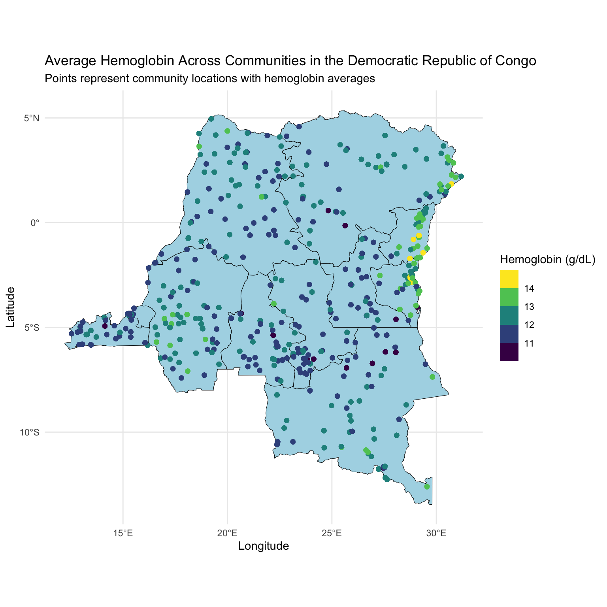
Looking at community sizes
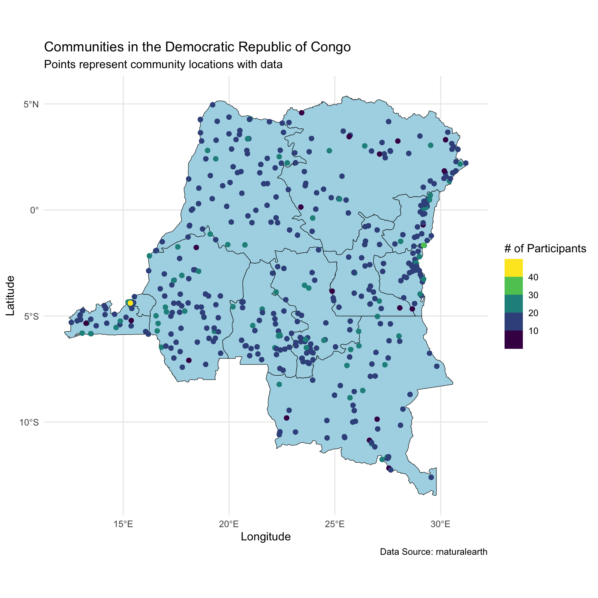
Today we will focus on one state
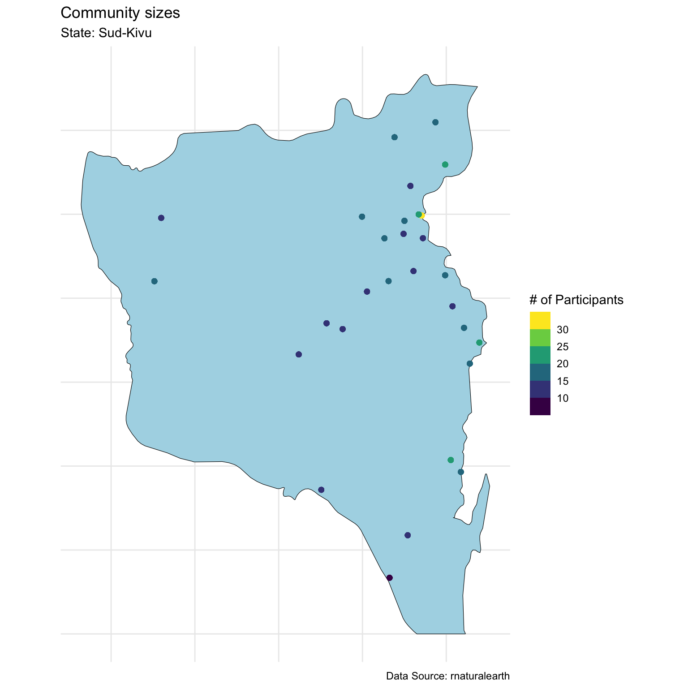
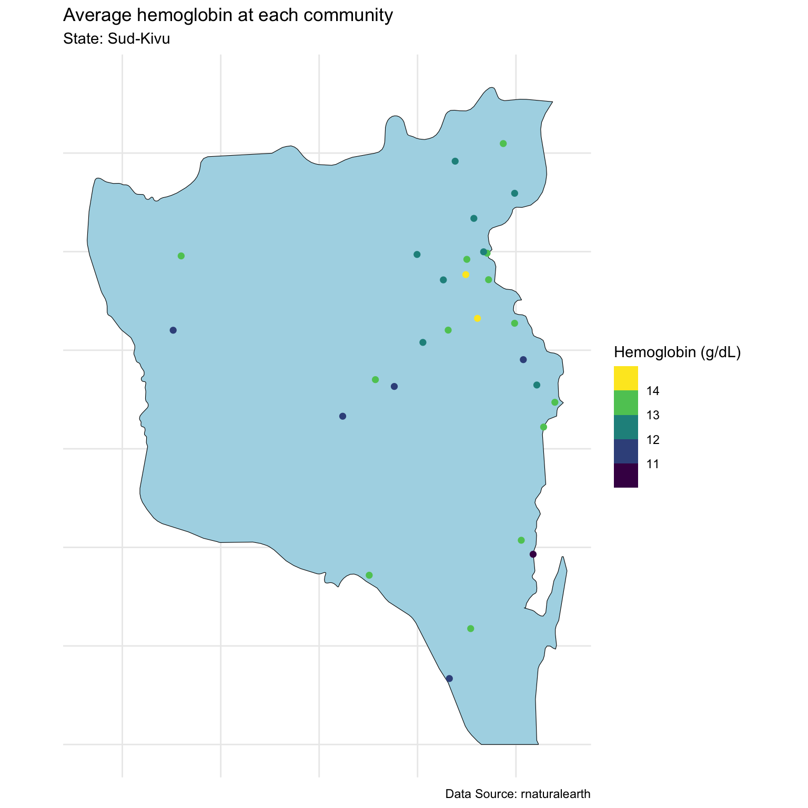
Modeling
We specify the following model:
\[\begin{aligned} Y_j(\mathbf{u}_i) &= \alpha + \mathbf{x}_j(\mathbf{u}_i) \boldsymbol{\beta} + \theta(\mathbf{u}_i) + \epsilon_j(\mathbf{u}_i), \quad \epsilon_j(\mathbf{u}_i) \stackrel{iid}{\sim} N(0,\sigma^2)\\ \boldsymbol{\theta} | \tau,\rho &\sim N(\mathbf{0}_n,\mathbf{C})\\ \alpha^* &\sim N(0,4^2)\\ \beta_j | \sigma_{\beta} &\sim N(0,\sigma_{\beta}^2), \quad j = 1,\ldots,p\\ \sigma &\sim \text{Half-Normal}(0, 2^2)\\ \tau &\sim \text{Half-Normal}(0, 4^2)\\ \rho &\sim \text{Inv-Gamma}(5, 5)\\ \sigma_{\beta} &\sim \text{Half-Normal}(0, 2^2) \end{aligned}\]
Where \(N = 490\), \(n = 29\), \(\mathbf{x}_j(\mathbf{u}_i) = (\text{age}_{ij}/10, \text{urban}_i)\), and \(\mathbf{C}\) is the Matérn 3/2.
Define the prediction grid
For prediction I created a \(20 \times 20\) grid, making sure the points are in the surface.
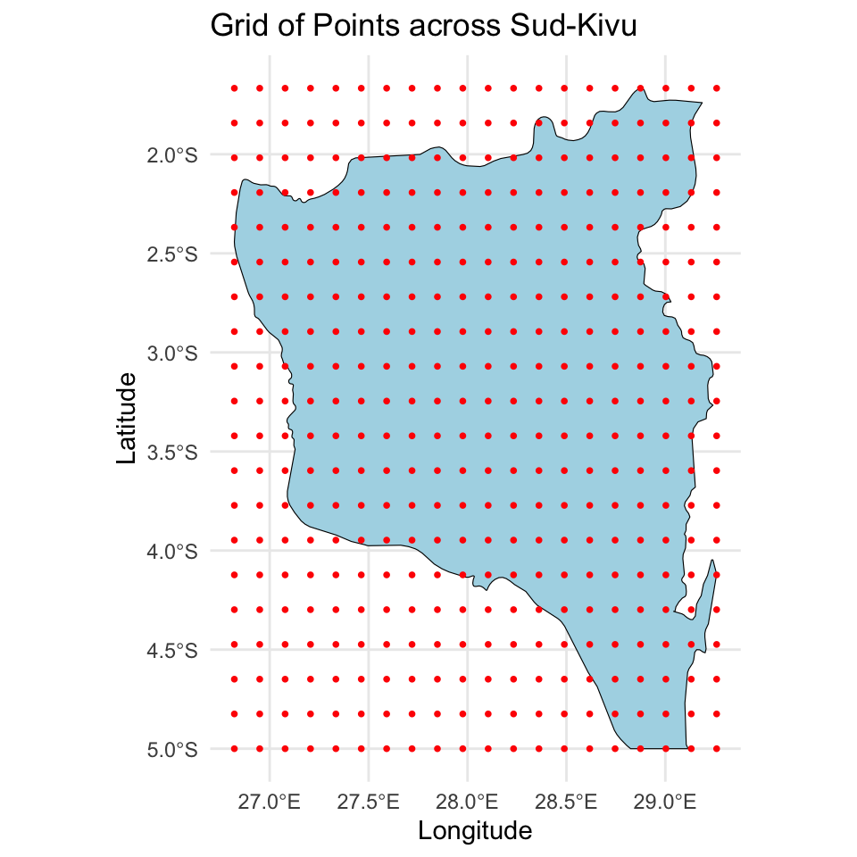
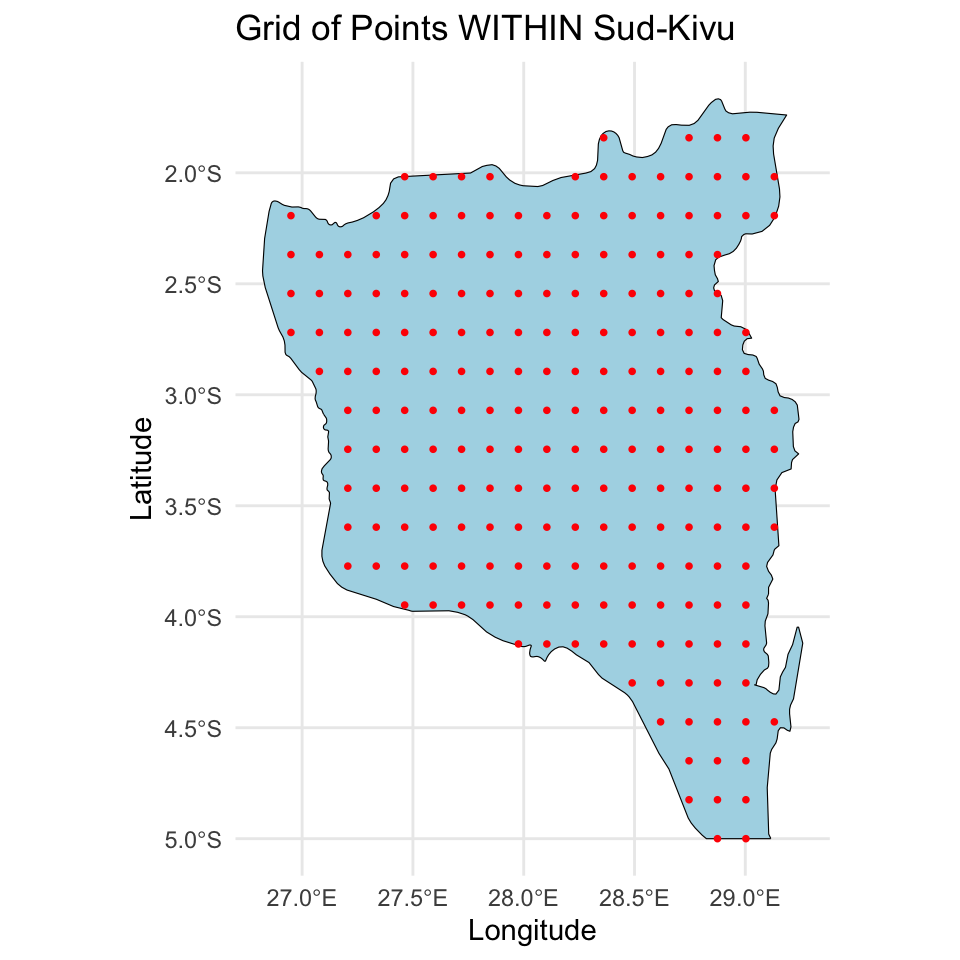
Stan code
functions {
matrix L_matern32(array[] vector x, real tau, real rho, real delta) {
matrix[size(x), size(x)] cov;
cov = add_diag(gp_matern32_cov(x, tau, rho), delta);
return cholesky_decompose(cov);
}
vector theta_new_rng(array[] vector x, array[] vector x_new, real tau,
real rho, vector z_obs, real delta) {
int n = size(x);
int q = size(x_new);
vector[q] theta_new;
{ // everything declared inside of {} will only exist in that local environment
matrix[n, n] LC = L_matern32(x, tau, rho, delta);
vector[n] theta_obs = LC * z_obs;
matrix[n, q] Cplus = gp_matern32_cov(x, x_new, tau, rho);
matrix[n, q] LCinv_Cplus = mdivide_left_tri_low(LC, Cplus);
vector[n] LCinv_theta_obs = mdivide_left_tri_low(LC, theta_obs);
vector[q] theta_new_mu = LCinv_Cplus' * LCinv_theta_obs;
matrix[q, q] C_star = add_diag(gp_matern32_cov(x_new, tau, rho), delta);
matrix[q, q] theta_new_cov = C_star - LCinv_Cplus' * LCinv_Cplus;
theta_new = multi_normal_rng(theta_new_mu, theta_new_cov);
}
return theta_new;
}
matrix cov2cor(matrix V) {
int p = rows(V);
vector[p] Is = inv_sqrt(diagonal(V));
return quad_form_diag(V, Is);
}
}
data {
int<lower = 1> N; // number of observed data points
int<lower = 1> p; // number of fixed covariates
int<lower = 1> n; // number of unique locations
int<lower = 1> d; // dimension of the spatial location
int<lower = 1> q; // total number of points for prediction
vector[N] Y; // observed data
matrix[N, p] X; // design matrix - fixed effects
array[N] int<lower = 1, upper = n> Ids; // location mapping indices
array[n] vector[d] u; // locations for observed data
array[q] vector[d] u_new; // locations for prediction
matrix[q, p] X_new; // design matrix for the new locations
}
transformed data {
real delta = 1e-9;
matrix[N, p] X_centered;
row_vector[p] X_bar;
for (i in 1:p) {
X_bar[i] = mean(X[, i]);
X_centered[, i] = X[, i] - X_bar[i];
}
}
parameters {
// likelihood parameters
real alpha_star; // centered intercept
vector[p] beta; // population coefficients
real<lower = 0> sigma; // nugget error term
// GP parameters
real<lower = 0> tau; // GP scale for intercept
real<lower = 0> rho; // GP length for intercept
vector[n] z; // standard normal
// hyperparameters
real<lower = 0> sigma_beta; // variance for coefficients
}
transformed parameters {
// compute spatial intercept
matrix[n,n] LC = L_matern32(u, tau, rho, delta);
vector[n] theta = LC * z; // spatial intercept
}
model {
// likelihood
target += normal_lupdf(Y | alpha_star + X_centered * beta + theta[Ids], sigma);
// likelihood parameters
target += normal_lupdf(alpha_star | 0, 4);
target += normal_lupdf(beta | 0, sigma_beta);
target += normal_lupdf(sigma | 0, 2);
// GP parameters
target += normal_lupdf(tau | 0, 4);
target += inv_gamma_lupdf(rho | 5, 5);
target += normal_lupdf(z | 0, 1);
// hyperparameters
target += normal_lupdf(sigma_beta | 0, 2);
}
generated quantities {
// intercepts
real alpha = alpha_star - X_bar * beta;
vector[n] alphas = alpha_star + theta;
// covariance
corr_matrix[n] Phi = cov2cor(add_diag(gp_matern32_cov(u, tau, rho), delta));
// posterior predictive distribution for the observed locations
array[N] real Y_pred = normal_rng(alpha + X * beta + theta[Ids], sigma);
// posterior predictive distribution across a new grid of locations
vector[q] theta_new = theta_new_rng(u, u_new, tau, rho, z, delta);
array[q] real Y_new = normal_rng(alpha + X_new * beta + theta_new, sigma);
// log-likelihood for loo
array[N] real log_lik;
for (i in 1:N) log_lik[i] = normal_lpdf(Y[i] | alpha + X[i, ] * beta + theta[Ids[i]], sigma);
}Function to compute \(\mathbf{L}\)
Function to predict \(\boldsymbol{\theta}^*\)
functions {
vector theta_new_rng(array[] vector x, array[] vector x_new, real tau,
real rho, vector z_obs, real delta) {
int n = size(x);
int q = size(x_new);
vector[q] theta_new;
{ // everything declared inside of {} will only exist in that local environment
matrix[n, n] LC = L_matern32(x, tau, rho, delta);
vector[n] theta_obs = LC * z_obs;
matrix[n, q] Cplus = gp_matern32_cov(x, x_new, tau, rho);
matrix[n, q] LCinv_Cplus = mdivide_left_tri_low(LC, Cplus);
vector[n] LCinv_theta_obs = mdivide_left_tri_low(LC, theta_obs);
vector[q] theta_new_mu = LCinv_Cplus' * LCinv_theta_obs;
matrix[q, q] C_star = add_diag(gp_matern32_cov(x_new, tau, rho), delta);
matrix[q, q] theta_new_cov = C_star - LCinv_Cplus' * LCinv_Cplus;
theta_new = multi_normal_rng(theta_new_mu, theta_new_cov);
}
return theta_new;
}
...
}Posterior summaries
Inference for Stan model: anon_model.
4 chains, each with iter=4000; warmup=2000; thin=1;
post-warmup draws per chain=2000, total post-warmup draws=8000.
mean se_mean sd 2.5% 25% 50% 75% 97.5% n_eff Rhat
alpha 11.44 0.07 2.04 5.29 11.10 12.08 12.61 13.41 937 1.01
beta[1] 0.00 0.00 0.07 -0.15 -0.04 0.00 0.04 0.14 6759 1.00
beta[2] 0.01 0.00 0.19 -0.39 -0.06 0.00 0.08 0.41 3647 1.00
sigma 1.76 0.00 0.06 1.64 1.72 1.76 1.80 1.88 3787 1.00
tau 1.72 0.04 1.26 0.43 0.90 1.35 2.10 5.20 937 1.00
rho 0.90 0.01 0.58 0.35 0.54 0.73 1.05 2.42 1837 1.00
sigma_beta 0.31 0.01 0.44 0.01 0.06 0.15 0.36 1.57 3734 1.00
Samples were drawn using NUTS(diag_e) at Fri Mar 14 09:53:01 2025.
For each parameter, n_eff is a crude measure of effective sample size,
and Rhat is the potential scale reduction factor on split chains (at
convergence, Rhat=1).Traceplots
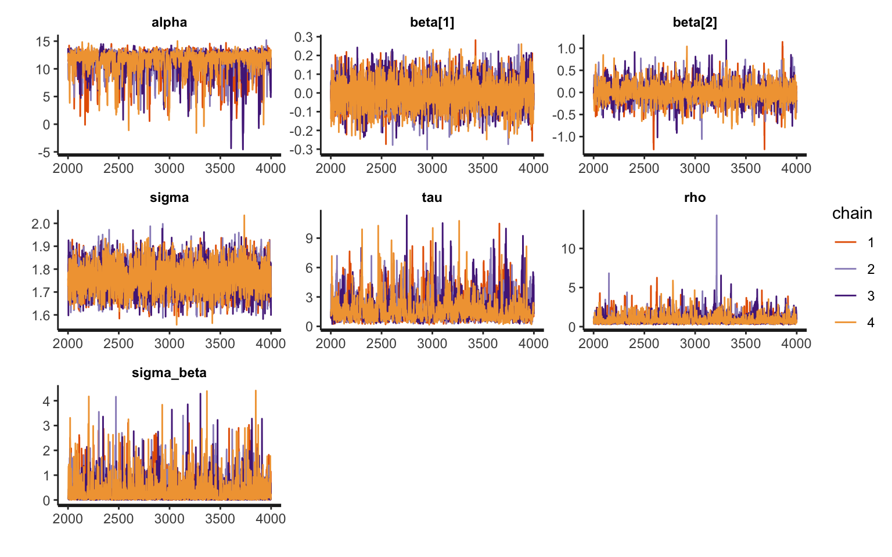
Traceplots
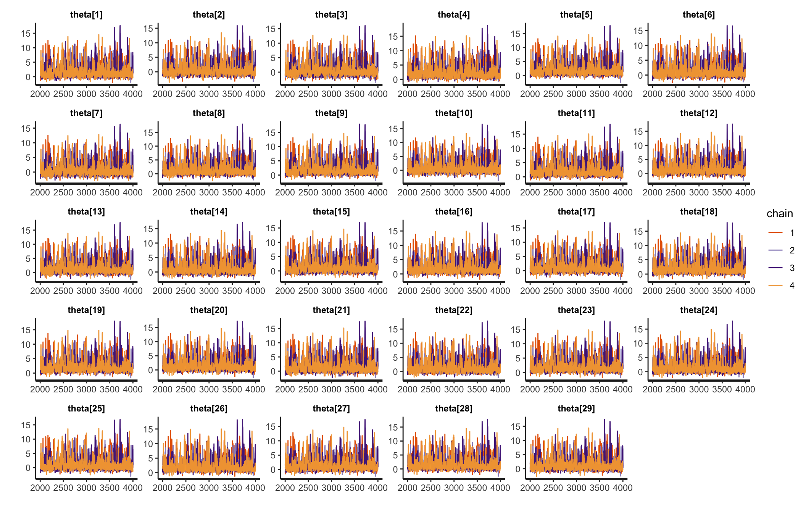
Traceplots
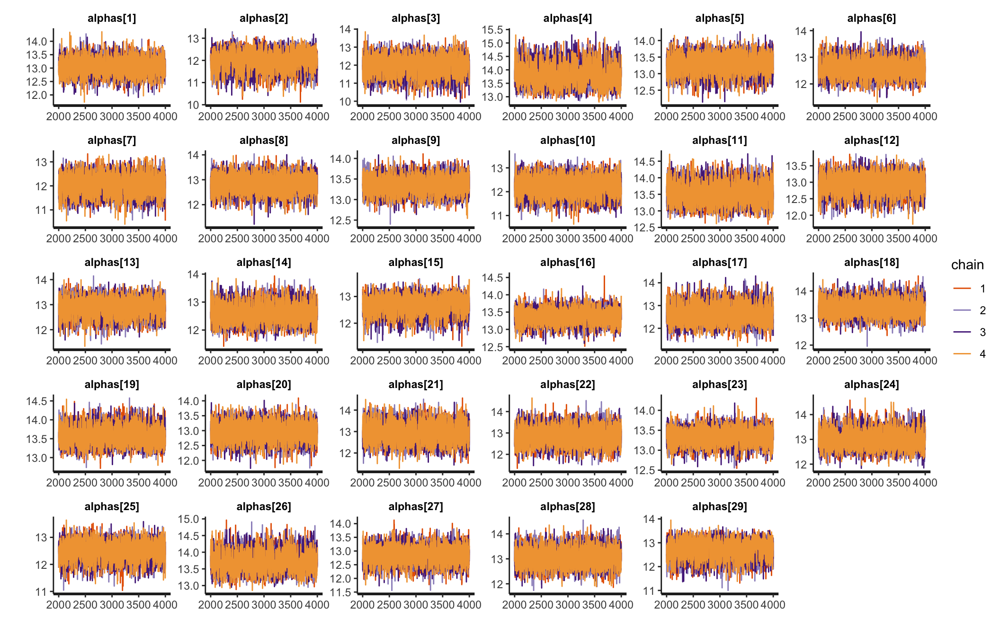
Posterior predictive check
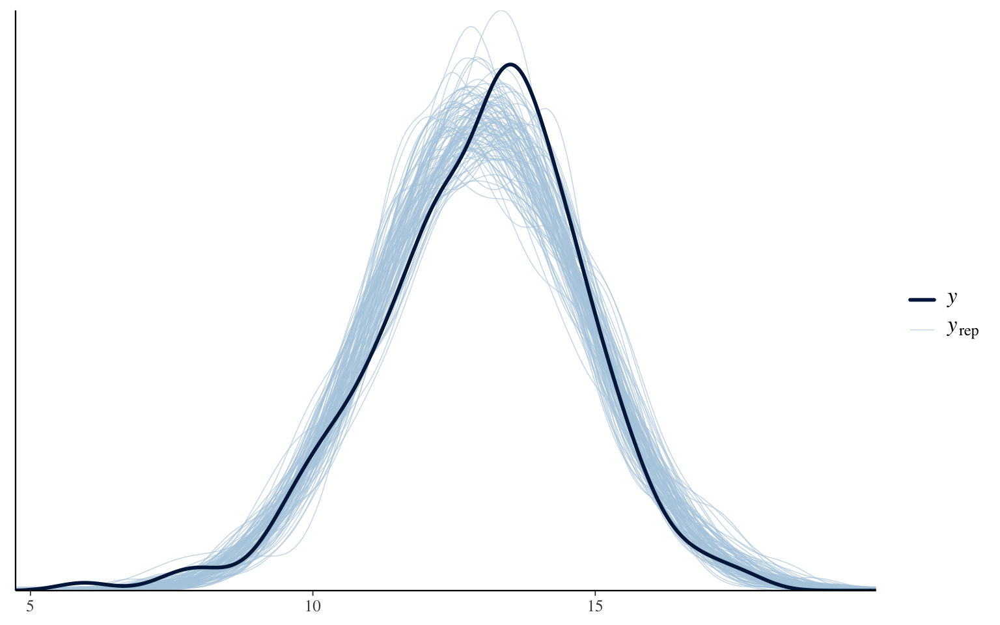
Posterior correlation matrix
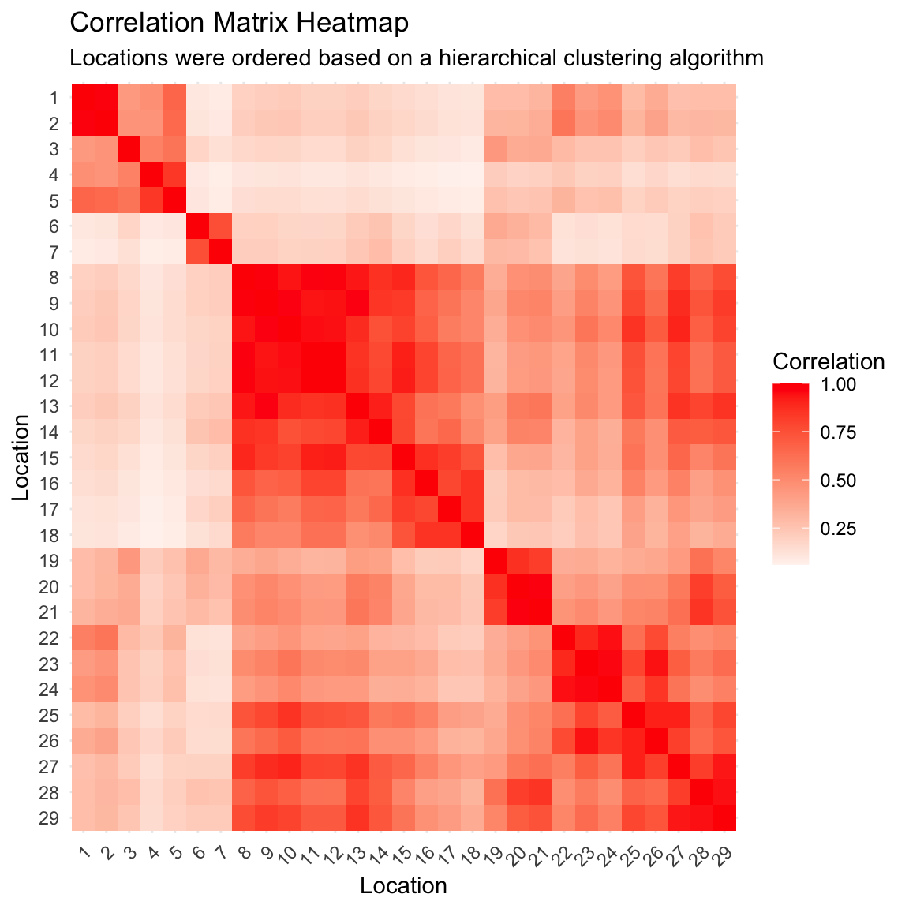
Correlation as a function of distance
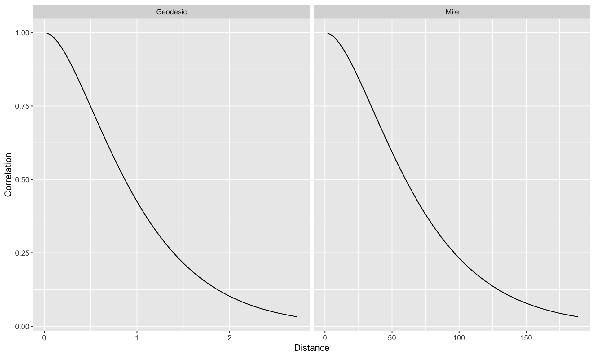
Posterior predictive distribution
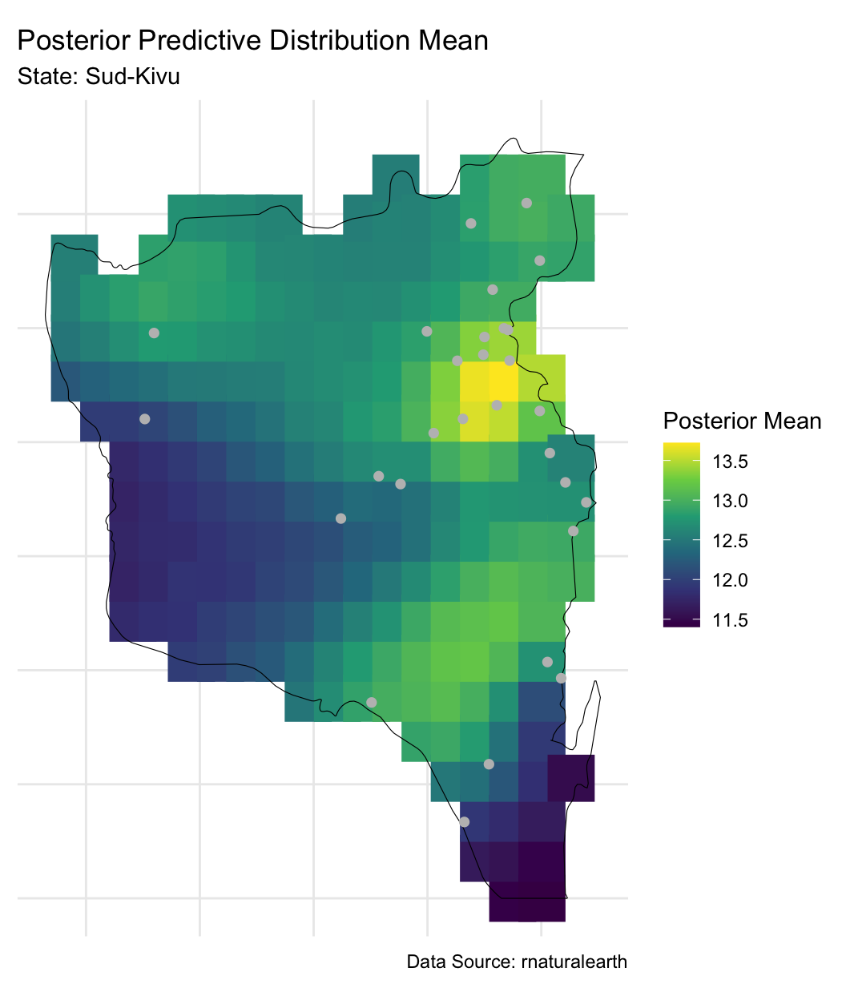
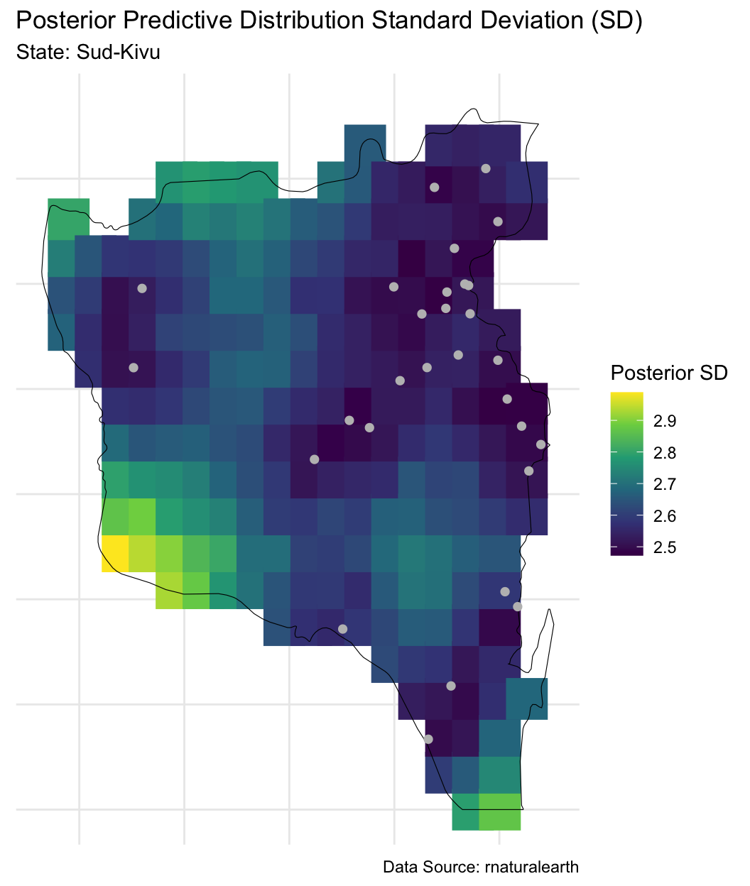
Trying to understand these trends
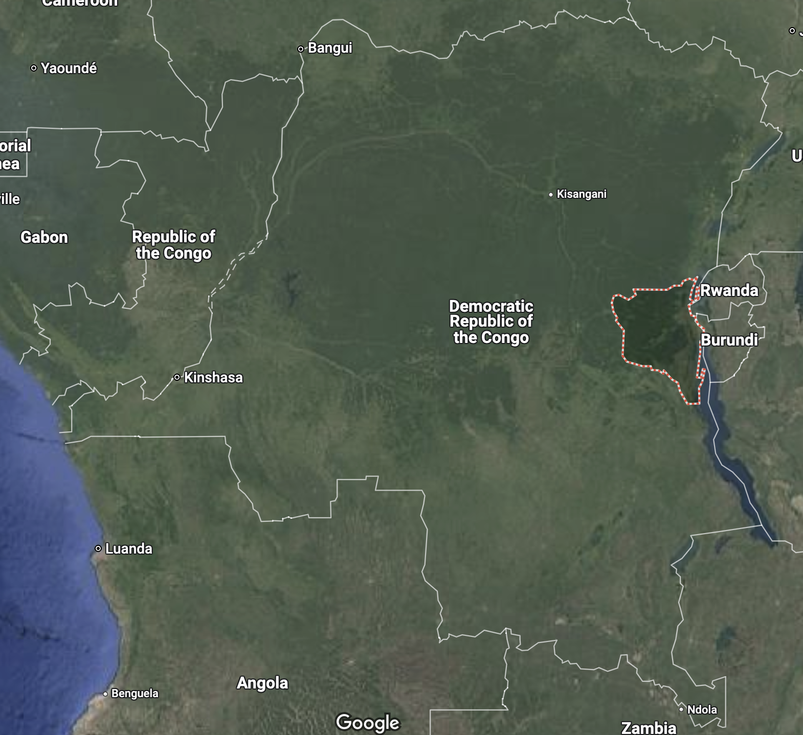
Trying to understand these trends
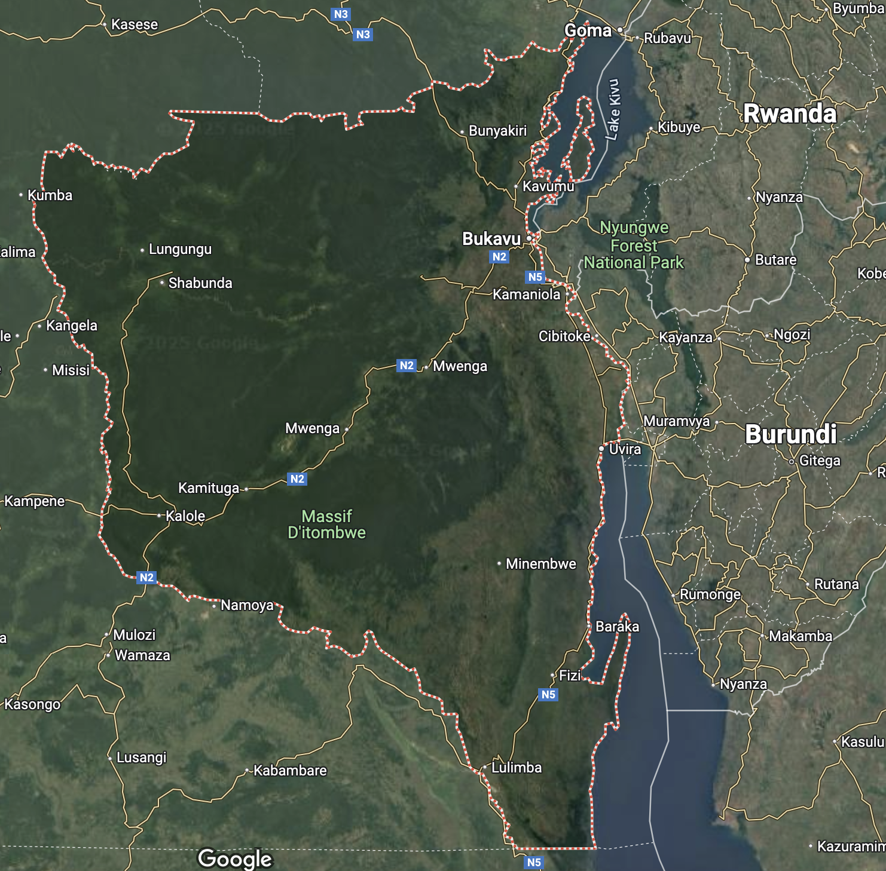
Prepare for next class
Work on HW 04, which is due before class next Tuesday.
Complete reading to prepare for next Thursday’s lecture
Thursday’s lecture: Scalable Gaussian Processes #1